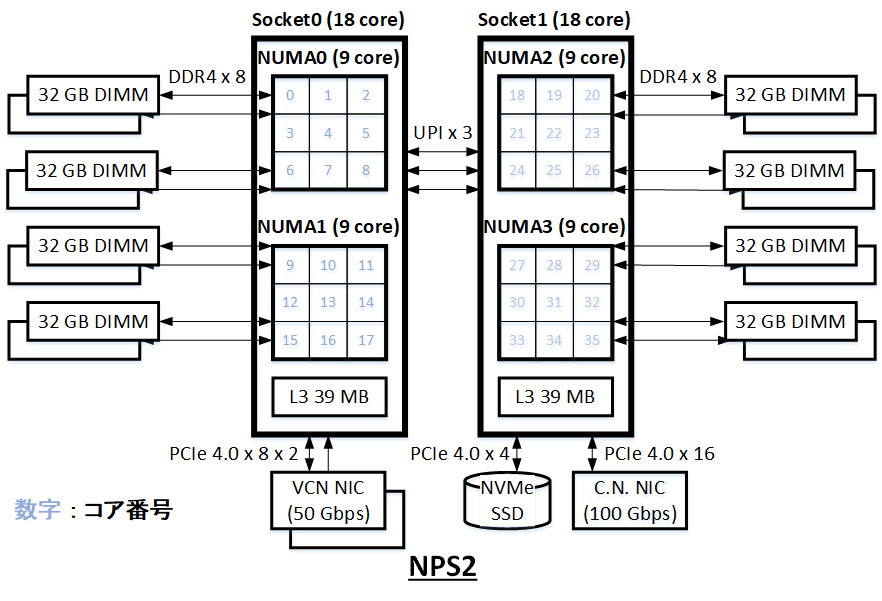
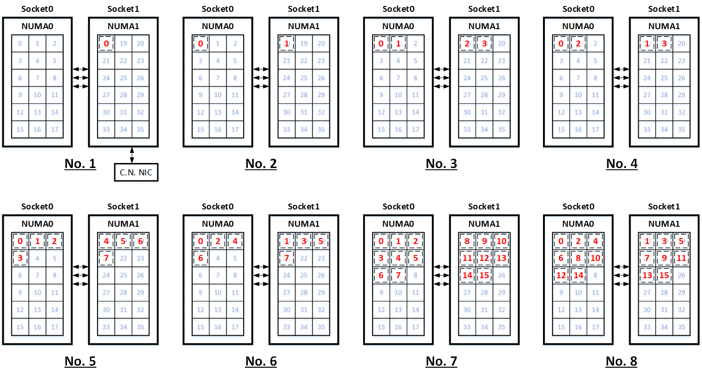
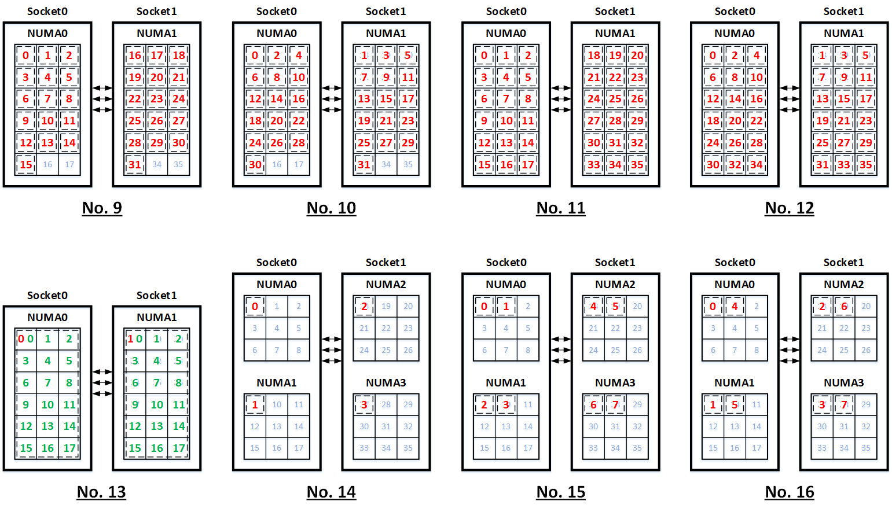
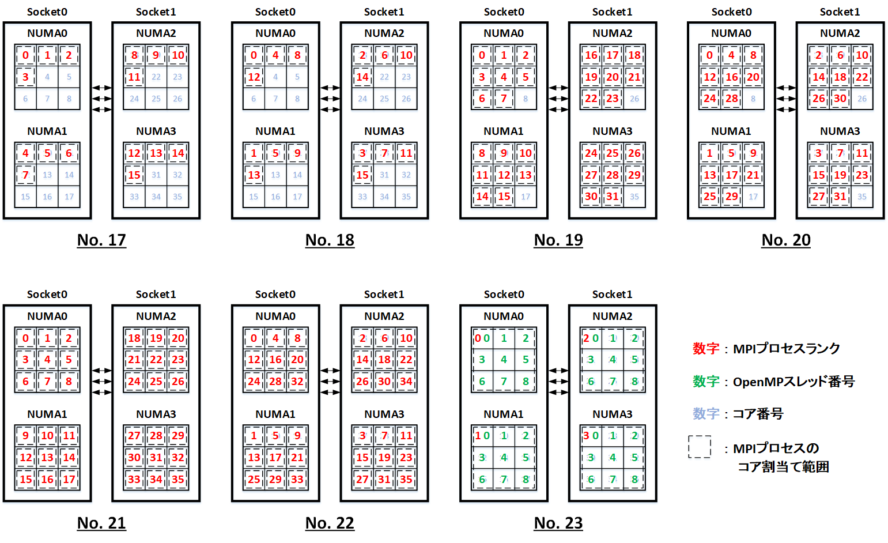

0. 概要
0-0. 概要
本パフォーマンス関連Tipsは、NUMA（Non-Umiform Memory Access）アーキテクチャを採用する クラスタ・ネットワーク 対応の Intel Ice Lake プロセッサを搭載するHPCワークロード向けベア・メタル・シェイプ BM.Optimized3.36 を使用するインスタンスで、並列プログラムの実行時性能に大きく影響するMPIが生成するプロセスとOpenMPが生成するスレッドのコア割当てについて、アプリケーション性能に有利となる典型的なパターンを例に挙げ、以下の観点でその実行方法を解説します。
- PRRTEを使用するプロセス・スレッドのコア割当て
この割当て方法は、 OpenMPI に同梱される PRRTE のMPIプロセスのコア割当て機能と、 GNUコンパイラ のOpenMPスレッドのコア割当て機能を組合せて、意図したプロセス・スレッドのコア割当てを実現します。
この方法は、ジョブスケジューラを使用せずに mpirun を使用してMPI並列アプリケーションをインタラクティブに実行する場合に使用します。 - Slurmを使用するプロセス・スレッドのコア割当て
この割当て方法は、 Slurm のMPIプロセスのコア割当て機能と、 GNUコンパイラ のOpenMPスレッドのコア割当て機能を組合せて、意図したプロセス・スレッドのコア割当てを実現します。
この方法は、 Slurm のジョブスケジューラ環境で srun を使用してMPI並列アプリケーションを実行する場合に使用します。
また最後の章では、プロセス・スレッドのコア割当てが想定通りに行われているかどうかを確認する方法と、この方法を使用して本パフォーマンス関連Tipsで紹介したコア割当てを行った際の出力例を紹介します。
なお、プロセス・スレッドのコア割当て同様に並列プログラムの実行時性能に大きく影響するメモリ割り当ては、割当てられるコアと同一NUMAノード内のメモリを割り当てることにより多くのケースで性能が最大となることから、以下のように - -localalloc オプションを付与した numactl コマンドの使用を前提とし、本パフォーマンス関連Tipsの実行例を記載します。
$ numactl --localalloc a.out
0-1. 前提システム
プロセス・スレッドのコア割当ては、使用するインスタンスのNUMAアーキテクチャやNUMAノードの構成方法に影響を受けますが、本パフォーマンス関連Tipsでは Intel Ice Lake プロセッサを搭載する BM.Optimized3.36 を使用し、NUMAノード構成に NUMA nodes per socket （以降 NPS と呼称します。）が 1 （これがデフォルトで、以降 NPS1 と呼称します。）と 2 （以降 NPS2 と呼称します。）の場合を取り上げ（※1）、それぞれに関するコア割当て方法を解説します。
また使用する BM.Optimized3.36 は、 Simultanious Multi Threading （以降 SMT と呼称します。）を無効化（デフォルトは有効です。）しています。（※1）
※1）NPS と SMT の設定方法は、 OCI HPCパフォーマンス関連情報 の パフォーマンスに関連するベアメタルインスタンスのBIOS設定方法 を参照してください。
以下は、 BM.Optimized3.36 のアーキテクチャ図です。

0-2. コア割当てパターン
本パフォーマンス関連Tipsで取り上げるプロセス・スレッドのコア割当ては、パフォーマンスの観点で利用頻度の高い以下のパターンを解説します。
マルチノード実行の場合は、ノード内コア割当てパターンを全てのノードに拡張します。
| No. | NPS | ノード当たり プロセス数 |
プロセス当たり スレッド数 |
プロセス分割方法 （※2） |
備考 |
|---|---|---|---|---|---|
| 1 | NPS1 | 1 | 1 | - | ノード間通信性能を考慮してプロセスを クラスタ・ネットワーク 接続用NIC側の ソケットに配置 |
| 2 | NPS1 | 2 | 1 | - | - |
| 3 | NPS1 | 4 | 1 | ブロック分割 | - |
| 4 | NPS1 | 4 | 1 | サイクリック分割 | - |
| 5 | NPS1 | 8 | 1 | ブロック分割 | - |
| 6 | NPS1 | 8 | 1 | サイクリック分割 | - |
| 7 | NPS1 | 16 | 1 | ブロック分割 | - |
| 8 | NPS1 | 16 | 1 | サイクリック分割 | - |
| 9 | NPS1 | 32 | 1 | ブロック分割 | - |
| 10 | NPS1 | 32 | 1 | サイクリック分割 | - |
| 11 | NPS1 | 36 | 1 | ブロック分割 | - |
| 12 | NPS1 | 36 | 1 | サイクリック分割 | - |
| 13 | NPS1 | 2 | 18 | - | MPI/OpenMPハイブリッド並列実行 |
| 14 | NPS2 | 4 | 1 | - | - |
| 15 | NPS2 | 8 | 1 | ブロック分割 | - |
| 16 | NPS2 | 8 | 1 | サイクリック分割 | - |
| 17 | NPS2 | 16 | 1 | ブロック分割 | - |
| 18 | NPS2 | 16 | 1 | サイクリック分割 | - |
| 19 | NPS2 | 32 | 1 | ブロック分割 | - |
| 20 | NPS2 | 32 | 1 | サイクリック分割 | - |
| 21 | NPS2 | 36 | 1 | ブロック分割 | - |
| 22 | NPS2 | 36 | 1 | サイクリック分割 | - |
| 23 | NPS2 | 4 | 9 | - | MPI/OpenMPハイブリッド並列実行 |
※2）NUMAノードに対するプロセスの分割方法を示します。



1. PRRTEを使用するプロセス・スレッドのコア割当て
1-0. 概要
本章は、 OCI HPCテクニカルTips集 の Slurm環境での利用を前提とするUCX通信フレームワークベースのOpenMPI構築方法 に従って構築された OpenMPI に含まれる PRRTE を使用し、 0-2. コア割当てパターン に記載のコア割当てを実現する方法を解説します。
以降で解説するコア割当て方法は、以下の mpirun コマンドオプションと GNUコンパイラ 環境変数を組合せて実現します。
[ mpirun オプション]
- -n ：起動するMPIプロセス数
- - -bind-to ：MPIプロセスを割当てるリソース単位
- - -map-by ：MPIプロセスを割り振るリソース単位
- - -rank-by ：MPIプロセスを割り振るポリシー
[ GNUコンパイラ 環境変数]
- OMP_NUM_THREADS ：MPIプロセス当たりのOpenMPスレッド数
- OMP_PROC_BIND ：OpenMPスレッドのコア割当て方法
例えば No. 11 のコア割当てを1ノードで行う場合のコマンドは、以下になります。
$ mpirun -n 36 --hostfile ~/hostlist.txt --bind-to core --map-by ppr:18:package --rank-by fill numactl --localalloc ./a.out
また No. 23 のコア割当てを1ノードで行う場合のコマンドは、以下になります。
$ mpirun -n 4 --hostfile ~/hostlist.txt --bind-to core --map-by ppr:1:numa:PE=9 -x OMP_NUM_THREAD=9 -x OMP_PROC_BIND=TRUE numactl --localalloc ./a.out
以降では、コア割当てパターンを実現するオプション・環境変数の組み合わせを解説します。
1-1. 各コア割当てパターンのオプション・環境変数組合せ
本章は、 0-2. コア割当てパターン に記載のコア割当てを実現するための、 mpirun コマンドオプションと GNUコンパイラ 環境変数の組合せを記載します。
なお、表中に - と記載されている箇所は、そのオプション・環境変数を指定する必要が無い（デフォルトのままで良い）ことを示します。
また、マルチノード実行の場合は、 -n オプションの設定値をノード数で掛けた値に変更します。例えば No.1 の割当てパターンを2ノードで実行する場合は、 -n オプションに 2 を指定します。
| No. | -n | - -bind-to | - -map-by | - -rank-by | OMP_NUM_THREADS | OMP_PROC_BIND |
|---|---|---|---|---|---|---|
| 1 | 1 | - | pe-list=18 | - | - | - |
| 2 | 2 | core | ppr:1:package | - | - | - |
| 3 | 4 | core | ppr:2:package | fill | - | - |
| 4 | 4 | - | （※3） | - | - | - |
| 5 | 8 | core | ppr:4:package | fill | - | - |
| 6 | 8 | - | （※3） | - | - | - |
| 7 | 16 | core | ppr:8:package | fill | - | - |
| 8 | 16 | - | （※3） | - | - | - |
| 9 | 32 | core | ppr:16:package | fill | - | - |
| 10 | 32 | - | （※3） | - | - | - |
| 11 | 36 | core | ppr:18:package | fill | - | - |
| 12 | 36 | - | （※3） | - | - | - |
| 13 | 2 | core | ppr:1:package:PE=18 | - | 18 | TRUE |
| 14 | 4 | core | ppr:1:numa | - | - | - |
| 15 | 8 | core | ppr:2:numa | fill | - | - |
| 16 | 8 | - | （※3） | - | - | - |
| 17 | 16 | core | ppr:4:numa | fill | - | - |
| 18 | 16 | - | （※3） | - | - | - |
| 19 | 32 | core | ppr:8:numa | fill | - | - |
| 20 | 32 | - | （※3） | - | - | - |
| 21 | 36 | core | ppr:9:numa | fill | - | - |
| 22 | 36 | - | （※3） | - | - | - |
| 23 | 4 | core | ppr:1:numa:PE=9 | - | 9 | TRUE |
※3）コア割当てパターンの番号に応じて、 - -map-by オプションの値に以下を指定します。
[No. 4]
pe-list=`for i in \`seq 0 1\`; do seq -s, $i 18 35 | tr '\n' ','; done | sed 's/,$//g'`:ordered
[No. 6]
pe-list=`for i in \`seq 0 3\`; do seq -s, $i 18 35 | tr '\n' ','; done | sed 's/,$//g'`:ordered
[No. 8]
pe-list=`for i in \`seq 0 7\`; do seq -s, $i 18 35 | tr '\n' ','; done | sed 's/,$//g'`:ordered
[No. 10]
pe-list=`for i in \`seq 0 15\`; do seq -s, $i 18 35 | tr '\n' ','; done | sed 's/,$//g'`:ordered
[No. 12]
pe-list=`for i in \`seq 0 17\`; do seq -s, $i 18 35 | tr '\n' ','; done | sed 's/,$//g'`:ordered
[No. 16]
pe-list=`for i in \`seq 0 1\`; do seq -s, $i 9 35 | tr '\n' ','; done | sed 's/,$//g'`:ordered
[No. 18]
pe-list=`for i in \`seq 0 3\`; do seq -s, $i 9 35 | tr '\n' ','; done | sed 's/,$//g'`:ordered
[No. 20]
pe-list=`for i in \`seq 0 7\`; do seq -s, $i 9 35 | tr '\n' ','; done | sed 's/,$//g'`:ordered
[No. 22]
pe-list=`for i in \`seq 0 8\`; do seq -s, $i 9 35 | tr '\n' ','; done | sed 's/,$//g'`:ordered
2. Slurmを使用するプロセス・スレッドのコア割当て
2-0. 概要
本章は、 OCI HPCテクニカルTips集 の Slurmによるリソース管理・ジョブ管理システム構築方法 に従って構築された Slurm ジョブスケジューラ環境で、 0-2. コア割当てパターン に記載のコア割当てを実現する方法を解説します。
ここで NPS1 と NPS2 のコア割当てパターンは、 OCI HPCテクニカルTips集 の Slurmによるリソース管理・ジョブ管理システム運用Tips の 3. ヘテロジニアス環境下のパーティションを使った計算/GPUノード割り当て制御 に従って構築したパーティション nps1 と nps2 で実行することを前提とします。
以降で解説するコア割当て方法は、以下の srun コマンドオプションと GNUコンパイラ 環境変数を組合せて実現します。
[ srun オプション]
- -p ：投入するパーティション
- -n ：起動するMPIプロセス数
- -N ：割当てるノード数
- -c ：プロセス当たりに割り当てるコア数
- - -cpu-bind ：MPIプロセスを割当てるリソース単位
- -m ：MPIプロセスを割り振るポリシー
[ GNUコンパイラ 環境変数]
- OMP_NUM_THREADS ：MPIプロセス当たりのOpenMPスレッド数
- OMP_PROC_BIND ：OpenMPスレッドのコア割当て方法
例えば No. 11 のコア割当てを1ノードで行う場合のコマンドは、以下になります。
$ srun -p nps1 -n 36 --cpu-bind=cores -m block:block numactl --localalloc ./a.out
また No. 23 のコア割当てを2ノードで行う場合のコマンドは、以下になります。
$ OMP_NUM_THREADS=9 OMP_PROC_BIND=TRUE srun -p nps2 -n 8 -N 2 -c 9 --cpu-bind=rank_ldom numactl --localalloc ./a.out
以降では、コア割当てパターンを実現するオプション・環境変数の組み合わせを解説します。
2-1. 各コア割当てパターンのオプション・環境変数組合せ
本章は、 0-2. コア割当てパターン に記載のコア割当てを実現するための、 srun コマンドオプションと GNUコンパイラ 環境変数の組合せを記載します。
なお、表中に - と記載されている箇所は、そのオプション・環境変数を指定する必要が無い（デフォルトのままで良い）ことを示します。
また、マルチノード実行の場合は、ノード数を -N オプションに指定し、 -n オプションの設定値をノード数で掛けた値に変更します。例えば No.1 の割当てパターンを2ノードで実行する場合は、 -n オプション -N オプション共に 2 を指定します。シングルノード実行の場合は、 -N オプションを指定する必要はありません。
| No. | -p | -n | -c | - -cpu-bind | -m | OMP_NUM_THREADS | OMP_PROC_BIND |
|---|---|---|---|---|---|---|---|
| 1 | nps1 | 1 | - | map_cpu:18 | - | - | - |
| 2 | nps1 | 2 | - | cores | - | - | - |
| 3 | nps1 | 4 | - | （※4） | - | - | - |
| 4 | nps1 | 4 | - | cores | - | - | - |
| 5 | nps1 | 8 | - | （※4） | - | - | - |
| 6 | nps1 | 8 | - | cores | - | - | - |
| 7 | nps1 | 16 | - | （※4） | - | - | - |
| 8 | nps1 | 16 | - | cores | - | - | - |
| 9 | nps1 | 32 | - | （※4） | - | - | - |
| 10 | nps1 | 32 | - | cores | - | - | - |
| 11 | nps1 | 36 | - | cores | block:block | - | - |
| 12 | nps1 | 36 | - | cores | - | - | |
| 13 | nps1 | 2 | 18 | cores | - | 18 | TRUE |
| 14 | nps2 | 4 | - | rank_ldom | - | - | - |
| 15 | nps2 | 8 | - | （※4） | - | - | - |
| 16 | nps2 | 8 | - | rank_ldom | - | - | - |
| 17 | nps2 | 16 | - | （※4） | - | - | - |
| 18 | nps2 | 16 | - | rank_ldom | - | - | - |
| 19 | nps2 | 32 | - | （※4） | - | - | - |
| 20 | nps2 | 32 | - | rank_ldom | - | - | - |
| 21 | nps2 | 36 | - | ldoms | block:block | - | - |
| 22 | nps2 | 36 | - | rank_ldom | - | - | |
| 23 | nps2 | 4 | 9 | rank_ldom | - | 9 | TRUE |
※4）コア割当てパターンの番号に応じて、 - -cpu-bind オプションの値に以下を指定します。
[No. 3]
map_cpu:`for i in \`echo 0 18\`; do seq -s, $i $((i+1)) | tr '\n' ','; done | sed 's/,$//g'`
[No. 5]
map_cpu:`for i in \`echo 0 18\`; do seq -s, $i $((i+3)) | tr '\n' ','; done | sed 's/,$//g'`
[No. 7]
map_cpu:`for i in \`echo 0 18\`; do seq -s, $i $((i+7)) | tr '\n' ','; done | sed 's/,$//g'`
[No. 9]
map_cpu:`for i in \`echo 0 18\`; do seq -s, $i $((i+15)) | tr '\n' ','; done | sed 's/,$//g'`
[No. 15]
map_ldom:`for i in \`seq 0 3\`; do for j in \`seq 0 1\`; do echo -n $i","; done; done | sed 's/,$//g'`
[No. 17]
map_ldom:`for i in \`seq 0 3\`; do for j in \`seq 0 3\`; do echo -n $i","; done; done | sed 's/,$//g'`
[No. 19]
map_ldom:`for i in \`seq 0 3\`; do for j in \`seq 0 7\`; do echo -n $i","; done; done | sed 's/,$//g'`
3. プロセス・スレッドのコア割当て確認方法
3-0. 概要
本章は、ここまで紹介したプロセス・スレッドのコア割当てが想定通りに行われているかを確認する方法を解説し、この方法を使用して各コア割当てパターンを確認した結果を紹介します。
ここで紹介する確認方法は、コア割当て対象のプログラムがフラットMPI並列かMPI/OpenMPハイブリッド並列か、コア割当てに PRRTE を使用するか Slurm を使用するかにより、以下の手法を採用します。
- フラットMPI並列
- PRRTE
PRRTE の - -report-bindings オプションの出力から、以下の情報を取得します。- MPIランク
- ノードホスト名
- プロセスが割当てられたコア番号
- Slurm
Slurm が実行時に設定する SLURM_ 環境変数と、 taskset コマンドの出力から、以下の情報を取得します。- MPIランク
- ノード番号
- プロセスが割当てられたコア番号
- PRRTE
- MPI/OpenMPハイブリッド並列
- PRRTE
GNUコンパイラ が実行時に設定する OMPI_COMM_WORLD_ 環境変数と、スレッド番号とこれが割当てられたコア番号を表示するOpenMPプログラムの出力から、以下の情報を取得します。- MPIランク
- ノード番号
- スレッド番号
- スレッドが割当てられたコア番号
- Slurm
Slurm が実行時に設定する SLURM_ 環境変数と、スレッド番号とこれが割当てられたコア番号を表示するOpenMPプログラムの出力から、以下の情報を取得します。- MPIランク
- ノード番号
- スレッド番号
- スレッドが割当てられたコア番号
- PRRTE
MPI/OpenMPハイブリッド並列で使用する、スレッド番号とこれが割当てられたコア番号を表示するOpenMPプログラムは、以下のソースコードを使用し、
[show_thread_bind.c]
/*
$ gcc -fopenmp show_thread_bind.c -o show_thread_bind
$ ./show_thread_bind | sort -k 2n,2
Thread 0 Core 0
Thread 1 Core 1
Thread 2 Core 2
Thread 3 Core 3
Thread 4 Core 4
Thread 5 Core 5
Thread 6 Core 6
Thread 7 Core 7
Thread 8 Core 8
*/
#include <stdio.h>
#include <stdlib.h>
#include <string.h>
#include <unistd.h>
#include <sys/syscall.h>
#include <omp.h>
#define min(a,b) a<b?a:b
void check_core(int rank){
char buf[0xff], buf2[4];
FILE *fp;
int pid, tid, ompid, count, c1, c2;
pid = getpid();
tid = (pid_t) syscall(SYS_gettid);
ompid = omp_get_thread_num();
sprintf(buf, "/proc/%d/task/%d/stat", pid, tid);
if ((fp = fopen(buf, "r")) != NULL) {
fgets(buf, 0xff, fp);
fclose(fp);
count = 0;
c1 = c2 = 0;
while(buf[c1]!='¥0'){
if(buf[c1]==' ')count++;
c1++;
if(count==38)break;
}
c2 = c1;
while(buf[c2]!='¥0'){
if(buf[c2]==' ')break;
c2++;
}
strncpy(buf2, &buf[c1], min(c2-c1, 4));
buf2[min(c2-c1, 4)] = '¥0';
printf("Thread %2d Core %2d\n", ompid, atoi(buf2)/10);
}
}
int main()
{
#pragma omp parallel
check_core(0);
}
これを以下のコマンドでコンパイルして使用します。
$ gcc -fopenmp show_thread_bind.c -o show_thread_bind
3-1. コア割当て確認結果
以下では、各コア割当てパターン番号ごとの確認結果を PRRTE と Slurm に分けて記載します。
3-1-1. PRRTE
[No.1]
$ mpirun -n 1 --hostfile ~/hostlist.txt --map-by pe-list=18 --report-bindings echo -n |& sort -k 3n,3
[inst-aaaaa-x9-nps1:11509] Rank 0 bound to package[1][core:18]
$
[No.2]
$ mpirun -n 2 --hostfile ~/hostlist.txt --bind-to=core --map-by ppr:1:package --report-bindings echo -n |& sort -k 3n,3
[inst-aaaaa-x9-nps1:11600] Rank 0 bound to package[0][core:0]
[inst-aaaaa-x9-nps1:11600] Rank 1 bound to package[1][core:18]
$
[No.3]
$ mpirun -n 4 --hostfile ~/hostlist.txt --bind-to=core --map-by ppr:2:package --rank-by fill --report-bindings echo -n |& sort -k 3n,3
[inst-aaaaa-x9-nps1:11672] Rank 0 bound to package[0][core:0]
[inst-aaaaa-x9-nps1:11672] Rank 1 bound to package[0][core:1]
[inst-aaaaa-x9-nps1:11672] Rank 2 bound to package[1][core:18]
[inst-aaaaa-x9-nps1:11672] Rank 3 bound to package[1][core:19]
$
[No.4]
$ mpirun -n 4 --hostfile ~/hostlist.txt --map-by pe-list=`for i in \`seq 0 1\`; do seq -s, $i 18 35 | tr '\n' ','; done | sed 's/,$//g'`:ordered --report-bindings echo -n |& sort -k 3n,3
[inst-aaaaa-x9-nps1:17790] Rank 0 bound to package[0][core:0]
[inst-aaaaa-x9-nps1:17790] Rank 1 bound to package[1][core:18]
[inst-aaaaa-x9-nps1:17790] Rank 2 bound to package[0][core:1]
[inst-aaaaa-x9-nps1:17790] Rank 3 bound to package[1][core:19]
$
[No.5]
$ mpirun -n 8 --hostfile ~/hostlist.txt --bind-to=core --map-by ppr:4:package --rank-by fill --report-bindings echo -n |& sort -k 3n,3
[inst-aaaaa-x9-nps1:11749] Rank 0 bound to package[0][core:0]
[inst-aaaaa-x9-nps1:11749] Rank 1 bound to package[0][core:1]
[inst-aaaaa-x9-nps1:11749] Rank 2 bound to package[0][core:2]
[inst-aaaaa-x9-nps1:11749] Rank 3 bound to package[0][core:3]
[inst-aaaaa-x9-nps1:11749] Rank 4 bound to package[1][core:18]
[inst-aaaaa-x9-nps1:11749] Rank 5 bound to package[1][core:19]
[inst-aaaaa-x9-nps1:11749] Rank 6 bound to package[1][core:20]
[inst-aaaaa-x9-nps1:11749] Rank 7 bound to package[1][core:21]
$
[No.6]
$ mpirun -n 8 --hostfile ~/hostlist.txt --map-by pe-list=`for i in \`seq 0 3\`; do seq -s, $i 18 35 | tr '\n' ','; done | sed 's/,$//g'`:ordered --report-bindings echo -n |& sort -k 3n,3
[inst-aaaaa-x9-nps1:18111] Rank 0 bound to package[0][core:0]
[inst-aaaaa-x9-nps1:18111] Rank 1 bound to package[1][core:18]
[inst-aaaaa-x9-nps1:18111] Rank 2 bound to package[0][core:1]
[inst-aaaaa-x9-nps1:18111] Rank 3 bound to package[1][core:19]
[inst-aaaaa-x9-nps1:18111] Rank 4 bound to package[0][core:2]
[inst-aaaaa-x9-nps1:18111] Rank 5 bound to package[1][core:20]
[inst-aaaaa-x9-nps1:18111] Rank 6 bound to package[0][core:3]
[inst-aaaaa-x9-nps1:18111] Rank 7 bound to package[1][core:21]
$
[No.7]
$ mpirun -n 16 --hostfile ~/hostlist.txt --bind-to=core --map-by ppr:8:package --rank-by fill --report-bindings echo -n |& sort -k 3n,3
[inst-aaaaa-x9-nps1:11827] Rank 0 bound to package[0][core:0]
[inst-aaaaa-x9-nps1:11827] Rank 1 bound to package[0][core:1]
[inst-aaaaa-x9-nps1:11827] Rank 2 bound to package[0][core:2]
[inst-aaaaa-x9-nps1:11827] Rank 3 bound to package[0][core:3]
[inst-aaaaa-x9-nps1:11827] Rank 4 bound to package[0][core:4]
[inst-aaaaa-x9-nps1:11827] Rank 5 bound to package[0][core:5]
[inst-aaaaa-x9-nps1:11827] Rank 6 bound to package[0][core:6]
[inst-aaaaa-x9-nps1:11827] Rank 7 bound to package[0][core:7]
[inst-aaaaa-x9-nps1:11827] Rank 8 bound to package[1][core:18]
[inst-aaaaa-x9-nps1:11827] Rank 9 bound to package[1][core:19]
[inst-aaaaa-x9-nps1:11827] Rank 10 bound to package[1][core:20]
[inst-aaaaa-x9-nps1:11827] Rank 11 bound to package[1][core:21]
[inst-aaaaa-x9-nps1:11827] Rank 12 bound to package[1][core:22]
[inst-aaaaa-x9-nps1:11827] Rank 13 bound to package[1][core:23]
[inst-aaaaa-x9-nps1:11827] Rank 14 bound to package[1][core:24]
[inst-aaaaa-x9-nps1:11827] Rank 15 bound to package[1][core:25]
$
[No.8]
$ mpirun -n 16 --hostfile ~/hostlist.txt --map-by pe-list=`for i in \`seq 0 7\`; do seq -s, $i 18 35 | tr '\n' ','; done | sed 's/,$//g'`:ordered --report-bindings echo -n |& sort -k 3n,3
[inst-aaaaa-x9-nps1:18428] Rank 0 bound to package[0][core:0]
[inst-aaaaa-x9-nps1:18428] Rank 1 bound to package[1][core:18]
[inst-aaaaa-x9-nps1:18428] Rank 2 bound to package[0][core:1]
[inst-aaaaa-x9-nps1:18428] Rank 3 bound to package[1][core:19]
[inst-aaaaa-x9-nps1:18428] Rank 4 bound to package[0][core:2]
[inst-aaaaa-x9-nps1:18428] Rank 5 bound to package[1][core:20]
[inst-aaaaa-x9-nps1:18428] Rank 6 bound to package[0][core:3]
[inst-aaaaa-x9-nps1:18428] Rank 7 bound to package[1][core:21]
[inst-aaaaa-x9-nps1:18428] Rank 8 bound to package[0][core:4]
[inst-aaaaa-x9-nps1:18428] Rank 9 bound to package[1][core:22]
[inst-aaaaa-x9-nps1:18428] Rank 10 bound to package[0][core:5]
[inst-aaaaa-x9-nps1:18428] Rank 11 bound to package[1][core:23]
[inst-aaaaa-x9-nps1:18428] Rank 12 bound to package[0][core:6]
[inst-aaaaa-x9-nps1:18428] Rank 13 bound to package[1][core:24]
[inst-aaaaa-x9-nps1:18428] Rank 14 bound to package[0][core:7]
[inst-aaaaa-x9-nps1:18428] Rank 15 bound to package[1][core:25]
$
[No.9]
$ mpirun -n 32 --hostfile ~/hostlist.txt --bind-to=core --map-by ppr:16:package --rank-by fill --report-bindings echo -n |& sort -k 3n,3
[inst-aaaaa-x9-nps1:11915] Rank 0 bound to package[0][core:0]
[inst-aaaaa-x9-nps1:11915] Rank 1 bound to package[0][core:1]
[inst-aaaaa-x9-nps1:11915] Rank 2 bound to package[0][core:2]
[inst-aaaaa-x9-nps1:11915] Rank 3 bound to package[0][core:3]
[inst-aaaaa-x9-nps1:11915] Rank 4 bound to package[0][core:4]
[inst-aaaaa-x9-nps1:11915] Rank 5 bound to package[0][core:5]
[inst-aaaaa-x9-nps1:11915] Rank 6 bound to package[0][core:6]
[inst-aaaaa-x9-nps1:11915] Rank 7 bound to package[0][core:7]
[inst-aaaaa-x9-nps1:11915] Rank 8 bound to package[0][core:8]
[inst-aaaaa-x9-nps1:11915] Rank 9 bound to package[0][core:9]
[inst-aaaaa-x9-nps1:11915] Rank 10 bound to package[0][core:10]
[inst-aaaaa-x9-nps1:11915] Rank 11 bound to package[0][core:11]
[inst-aaaaa-x9-nps1:11915] Rank 12 bound to package[0][core:12]
[inst-aaaaa-x9-nps1:11915] Rank 13 bound to package[0][core:13]
[inst-aaaaa-x9-nps1:11915] Rank 14 bound to package[0][core:14]
[inst-aaaaa-x9-nps1:11915] Rank 15 bound to package[0][core:15]
[inst-aaaaa-x9-nps1:11915] Rank 16 bound to package[1][core:18]
[inst-aaaaa-x9-nps1:11915] Rank 17 bound to package[1][core:19]
[inst-aaaaa-x9-nps1:11915] Rank 18 bound to package[1][core:20]
[inst-aaaaa-x9-nps1:11915] Rank 19 bound to package[1][core:21]
[inst-aaaaa-x9-nps1:11915] Rank 20 bound to package[1][core:22]
[inst-aaaaa-x9-nps1:11915] Rank 21 bound to package[1][core:23]
[inst-aaaaa-x9-nps1:11915] Rank 22 bound to package[1][core:24]
[inst-aaaaa-x9-nps1:11915] Rank 23 bound to package[1][core:25]
[inst-aaaaa-x9-nps1:11915] Rank 24 bound to package[1][core:26]
[inst-aaaaa-x9-nps1:11915] Rank 25 bound to package[1][core:27]
[inst-aaaaa-x9-nps1:11915] Rank 26 bound to package[1][core:28]
[inst-aaaaa-x9-nps1:11915] Rank 27 bound to package[1][core:29]
[inst-aaaaa-x9-nps1:11915] Rank 28 bound to package[1][core:30]
[inst-aaaaa-x9-nps1:11915] Rank 29 bound to package[1][core:31]
[inst-aaaaa-x9-nps1:11915] Rank 30 bound to package[1][core:32]
[inst-aaaaa-x9-nps1:11915] Rank 31 bound to package[1][core:33]
$
[No.10]
$ mpirun -n 32 --hostfile ~/hostlist.txt --map-by pe-list=`for i in \`seq 0 15\`; do seq -s, $i 18 35 | tr '\n' ','; done | sed 's/,$//g'`:ordered --report-bindings echo -n |& sort -k 3n,3
[inst-aaaaa-x9-nps1:18807] Rank 0 bound to package[0][core:0]
[inst-aaaaa-x9-nps1:18807] Rank 1 bound to package[1][core:18]
[inst-aaaaa-x9-nps1:18807] Rank 2 bound to package[0][core:1]
[inst-aaaaa-x9-nps1:18807] Rank 3 bound to package[1][core:19]
[inst-aaaaa-x9-nps1:18807] Rank 4 bound to package[0][core:2]
[inst-aaaaa-x9-nps1:18807] Rank 5 bound to package[1][core:20]
[inst-aaaaa-x9-nps1:18807] Rank 6 bound to package[0][core:3]
[inst-aaaaa-x9-nps1:18807] Rank 7 bound to package[1][core:21]
[inst-aaaaa-x9-nps1:18807] Rank 8 bound to package[0][core:4]
[inst-aaaaa-x9-nps1:18807] Rank 9 bound to package[1][core:22]
[inst-aaaaa-x9-nps1:18807] Rank 10 bound to package[0][core:5]
[inst-aaaaa-x9-nps1:18807] Rank 11 bound to package[1][core:23]
[inst-aaaaa-x9-nps1:18807] Rank 12 bound to package[0][core:6]
[inst-aaaaa-x9-nps1:18807] Rank 13 bound to package[1][core:24]
[inst-aaaaa-x9-nps1:18807] Rank 14 bound to package[0][core:7]
[inst-aaaaa-x9-nps1:18807] Rank 15 bound to package[1][core:25]
[inst-aaaaa-x9-nps1:18807] Rank 16 bound to package[0][core:8]
[inst-aaaaa-x9-nps1:18807] Rank 17 bound to package[1][core:26]
[inst-aaaaa-x9-nps1:18807] Rank 18 bound to package[0][core:9]
[inst-aaaaa-x9-nps1:18807] Rank 19 bound to package[1][core:27]
[inst-aaaaa-x9-nps1:18807] Rank 20 bound to package[0][core:10]
[inst-aaaaa-x9-nps1:18807] Rank 21 bound to package[1][core:28]
[inst-aaaaa-x9-nps1:18807] Rank 22 bound to package[0][core:11]
[inst-aaaaa-x9-nps1:18807] Rank 23 bound to package[1][core:29]
[inst-aaaaa-x9-nps1:18807] Rank 24 bound to package[0][core:12]
[inst-aaaaa-x9-nps1:18807] Rank 25 bound to package[1][core:30]
[inst-aaaaa-x9-nps1:18807] Rank 26 bound to package[0][core:13]
[inst-aaaaa-x9-nps1:18807] Rank 27 bound to package[1][core:31]
[inst-aaaaa-x9-nps1:18807] Rank 28 bound to package[0][core:14]
[inst-aaaaa-x9-nps1:18807] Rank 29 bound to package[1][core:32]
[inst-aaaaa-x9-nps1:18807] Rank 30 bound to package[0][core:15]
[inst-aaaaa-x9-nps1:18807] Rank 31 bound to package[1][core:33]
$
[No.11]
$ mpirun -n 36 --hostfile ~/hostlist.txt --bind-to=core --map-by ppr:18:package --rank-by fill --report-bindings echo -n |& sort -k 3n,3
[inst-aaaaa-x9-nps1:12021] Rank 0 bound to package[0][core:0]
[inst-aaaaa-x9-nps1:12021] Rank 1 bound to package[0][core:1]
[inst-aaaaa-x9-nps1:12021] Rank 2 bound to package[0][core:2]
[inst-aaaaa-x9-nps1:12021] Rank 3 bound to package[0][core:3]
[inst-aaaaa-x9-nps1:12021] Rank 4 bound to package[0][core:4]
[inst-aaaaa-x9-nps1:12021] Rank 5 bound to package[0][core:5]
[inst-aaaaa-x9-nps1:12021] Rank 6 bound to package[0][core:6]
[inst-aaaaa-x9-nps1:12021] Rank 7 bound to package[0][core:7]
[inst-aaaaa-x9-nps1:12021] Rank 8 bound to package[0][core:8]
[inst-aaaaa-x9-nps1:12021] Rank 9 bound to package[0][core:9]
[inst-aaaaa-x9-nps1:12021] Rank 10 bound to package[0][core:10]
[inst-aaaaa-x9-nps1:12021] Rank 11 bound to package[0][core:11]
[inst-aaaaa-x9-nps1:12021] Rank 12 bound to package[0][core:12]
[inst-aaaaa-x9-nps1:12021] Rank 13 bound to package[0][core:13]
[inst-aaaaa-x9-nps1:12021] Rank 14 bound to package[0][core:14]
[inst-aaaaa-x9-nps1:12021] Rank 15 bound to package[0][core:15]
[inst-aaaaa-x9-nps1:12021] Rank 16 bound to package[0][core:16]
[inst-aaaaa-x9-nps1:12021] Rank 17 bound to package[0][core:17]
[inst-aaaaa-x9-nps1:12021] Rank 18 bound to package[1][core:18]
[inst-aaaaa-x9-nps1:12021] Rank 19 bound to package[1][core:19]
[inst-aaaaa-x9-nps1:12021] Rank 20 bound to package[1][core:20]
[inst-aaaaa-x9-nps1:12021] Rank 21 bound to package[1][core:21]
[inst-aaaaa-x9-nps1:12021] Rank 22 bound to package[1][core:22]
[inst-aaaaa-x9-nps1:12021] Rank 23 bound to package[1][core:23]
[inst-aaaaa-x9-nps1:12021] Rank 24 bound to package[1][core:24]
[inst-aaaaa-x9-nps1:12021] Rank 25 bound to package[1][core:25]
[inst-aaaaa-x9-nps1:12021] Rank 26 bound to package[1][core:26]
[inst-aaaaa-x9-nps1:12021] Rank 27 bound to package[1][core:27]
[inst-aaaaa-x9-nps1:12021] Rank 28 bound to package[1][core:28]
[inst-aaaaa-x9-nps1:12021] Rank 29 bound to package[1][core:29]
[inst-aaaaa-x9-nps1:12021] Rank 30 bound to package[1][core:30]
[inst-aaaaa-x9-nps1:12021] Rank 31 bound to package[1][core:31]
[inst-aaaaa-x9-nps1:12021] Rank 32 bound to package[1][core:32]
[inst-aaaaa-x9-nps1:12021] Rank 33 bound to package[1][core:33]
[inst-aaaaa-x9-nps1:12021] Rank 34 bound to package[1][core:34]
[inst-aaaaa-x9-nps1:12021] Rank 35 bound to package[1][core:35]
$
[No.12]
$ mpirun -n 36 --hostfile ~/hostlist.txt --map-by pe-list=`for i in \`seq 0 17\`; do seq -s, $i 18 35 | tr '\n' ','; done | sed 's/,$//g'`:ordered --report-bindings echo -n |& sort -k 3n,3
[inst-tngt2-x9-ol81-hpc-nps2:12774] Rank 0 bound to package[0][core:0]
[inst-tngt2-x9-ol81-hpc-nps2:12774] Rank 1 bound to package[1][core:18]
[inst-tngt2-x9-ol81-hpc-nps2:12774] Rank 2 bound to package[0][core:1]
[inst-tngt2-x9-ol81-hpc-nps2:12774] Rank 3 bound to package[1][core:19]
[inst-tngt2-x9-ol81-hpc-nps2:12774] Rank 4 bound to package[0][core:2]
[inst-tngt2-x9-ol81-hpc-nps2:12774] Rank 5 bound to package[1][core:20]
[inst-tngt2-x9-ol81-hpc-nps2:12774] Rank 6 bound to package[0][core:3]
[inst-tngt2-x9-ol81-hpc-nps2:12774] Rank 7 bound to package[1][core:21]
[inst-tngt2-x9-ol81-hpc-nps2:12774] Rank 8 bound to package[0][core:4]
[inst-tngt2-x9-ol81-hpc-nps2:12774] Rank 9 bound to package[1][core:22]
[inst-tngt2-x9-ol81-hpc-nps2:12774] Rank 10 bound to package[0][core:5]
[inst-tngt2-x9-ol81-hpc-nps2:12774] Rank 11 bound to package[1][core:23]
[inst-tngt2-x9-ol81-hpc-nps2:12774] Rank 12 bound to package[0][core:6]
[inst-tngt2-x9-ol81-hpc-nps2:12774] Rank 13 bound to package[1][core:24]
[inst-tngt2-x9-ol81-hpc-nps2:12774] Rank 14 bound to package[0][core:7]
[inst-tngt2-x9-ol81-hpc-nps2:12774] Rank 15 bound to package[1][core:25]
[inst-tngt2-x9-ol81-hpc-nps2:12774] Rank 16 bound to package[0][core:8]
[inst-tngt2-x9-ol81-hpc-nps2:12774] Rank 17 bound to package[1][core:26]
[inst-tngt2-x9-ol81-hpc-nps2:12774] Rank 18 bound to package[0][core:9]
[inst-tngt2-x9-ol81-hpc-nps2:12774] Rank 19 bound to package[1][core:27]
[inst-tngt2-x9-ol81-hpc-nps2:12774] Rank 20 bound to package[0][core:10]
[inst-tngt2-x9-ol81-hpc-nps2:12774] Rank 21 bound to package[1][core:28]
[inst-tngt2-x9-ol81-hpc-nps2:12774] Rank 22 bound to package[0][core:11]
[inst-tngt2-x9-ol81-hpc-nps2:12774] Rank 23 bound to package[1][core:29]
[inst-tngt2-x9-ol81-hpc-nps2:12774] Rank 24 bound to package[0][core:12]
[inst-tngt2-x9-ol81-hpc-nps2:12774] Rank 25 bound to package[1][core:30]
[inst-tngt2-x9-ol81-hpc-nps2:12774] Rank 26 bound to package[0][core:13]
[inst-tngt2-x9-ol81-hpc-nps2:12774] Rank 27 bound to package[1][core:31]
[inst-tngt2-x9-ol81-hpc-nps2:12774] Rank 28 bound to package[0][core:14]
[inst-tngt2-x9-ol81-hpc-nps2:12774] Rank 29 bound to package[1][core:32]
[inst-tngt2-x9-ol81-hpc-nps2:12774] Rank 30 bound to package[0][core:15]
[inst-tngt2-x9-ol81-hpc-nps2:12774] Rank 31 bound to package[1][core:33]
[inst-tngt2-x9-ol81-hpc-nps2:12774] Rank 32 bound to package[0][core:16]
[inst-tngt2-x9-ol81-hpc-nps2:12774] Rank 33 bound to package[1][core:34]
[inst-tngt2-x9-ol81-hpc-nps2:12774] Rank 34 bound to package[0][core:17]
[inst-tngt2-x9-ol81-hpc-nps2:12774] Rank 35 bound to package[1][core:35]
$
[No.13]
$ mpirun -n 2 --hostfile ~/hostlist.txt --bind-to core --map-by ppr:1:package:PE=18 -x OMP_NUM_THREAD=18 -x OMP_PROC_BIND=TRUE bash -c 'sleep $OMPI_COMM_WORLD_RANK; echo "Rank $OMPI_COMM_WORLD_RANK Node `echo $((OMPI_COMM_WORLD_RANK / OMPI_COMM_WORLD_LOCAL_SIZE))`"; ./show_thread_bind | sort -k 2n,2'
Rank 0 Node 0
Thread 0 Core 0
Thread 1 Core 1
Thread 2 Core 2
Thread 3 Core 3
Thread 4 Core 4
Thread 5 Core 5
Thread 6 Core 6
Thread 7 Core 7
Thread 8 Core 8
Thread 9 Core 9
Thread 10 Core 10
Thread 11 Core 11
Thread 12 Core 12
Thread 13 Core 13
Thread 14 Core 14
Thread 15 Core 15
Thread 16 Core 16
Thread 17 Core 17
Rank 1 Node 0
Thread 0 Core 18
Thread 1 Core 19
Thread 2 Core 20
Thread 3 Core 21
Thread 4 Core 22
Thread 5 Core 23
Thread 6 Core 24
Thread 7 Core 25
Thread 8 Core 26
Thread 9 Core 27
Thread 10 Core 28
Thread 11 Core 29
Thread 12 Core 30
Thread 13 Core 31
Thread 14 Core 32
Thread 15 Core 33
Thread 16 Core 34
Thread 17 Core 35
$
[No.14]
$ mpirun -n 4 --hostfile ~/hostlist.txt --bind-to=core --map-by ppr:1:numa --report-bindings echo -n |& sort -k 3n,3
[inst-bbbbb-x9-nps2:14057] Rank 0 bound to package[0][core:0]
[inst-bbbbb-x9-nps2:14057] Rank 1 bound to package[0][core:9]
[inst-bbbbb-x9-nps2:14057] Rank 2 bound to package[1][core:18]
[inst-bbbbb-x9-nps2:14057] Rank 3 bound to package[1][core:27]
$
[No.15]
$ mpirun -n 8 --hostfile ~/hostlist.txt --bind-to=core --map-by ppr:2:numa --rank-by fill --report-bindings echo -n |& sort -k 3n,3
[inst-bbbbb-x9-nps2:14134] Rank 0 bound to package[0][core:0]
[inst-bbbbb-x9-nps2:14134] Rank 1 bound to package[0][core:1]
[inst-bbbbb-x9-nps2:14134] Rank 2 bound to package[0][core:9]
[inst-bbbbb-x9-nps2:14134] Rank 3 bound to package[0][core:10]
[inst-bbbbb-x9-nps2:14134] Rank 4 bound to package[1][core:18]
[inst-bbbbb-x9-nps2:14134] Rank 5 bound to package[1][core:19]
[inst-bbbbb-x9-nps2:14134] Rank 6 bound to package[1][core:27]
[inst-bbbbb-x9-nps2:14134] Rank 7 bound to package[1][core:28]
$
[No.16]
$ mpirun -n 8 --hostfile ~/hostlist.txt --map-by pe-list=`for i in \`seq 0 1\`; do seq -s, $i 9 35 | tr '\n' ','; done | sed 's/,$//g'`:ordered --report-bindings echo -n |& sort -k 3n,3
[inst-bbbbb-x9-nps2:18123] Rank 0 bound to package[0][core:0]
[inst-bbbbb-x9-nps2:18123] Rank 1 bound to package[0][core:9]
[inst-bbbbb-x9-nps2:18123] Rank 2 bound to package[1][core:18]
[inst-bbbbb-x9-nps2:18123] Rank 3 bound to package[1][core:27]
[inst-bbbbb-x9-nps2:18123] Rank 4 bound to package[0][core:1]
[inst-bbbbb-x9-nps2:18123] Rank 5 bound to package[0][core:10]
[inst-bbbbb-x9-nps2:18123] Rank 6 bound to package[1][core:19]
[inst-bbbbb-x9-nps2:18123] Rank 7 bound to package[1][core:28]
$
[No.17]
$ mpirun -n 16 --hostfile ~/hostlist.txt --bind-to=core --map-by ppr:4:numa --rank-by fill --report-bindings echo -n |& sort -k 3n,3
[inst-bbbbb-x9-nps2:14216] Rank 0 bound to package[0][core:0]
[inst-bbbbb-x9-nps2:14216] Rank 1 bound to package[0][core:1]
[inst-bbbbb-x9-nps2:14216] Rank 2 bound to package[0][core:2]
[inst-bbbbb-x9-nps2:14216] Rank 3 bound to package[0][core:3]
[inst-bbbbb-x9-nps2:14216] Rank 4 bound to package[0][core:9]
[inst-bbbbb-x9-nps2:14216] Rank 5 bound to package[0][core:10]
[inst-bbbbb-x9-nps2:14216] Rank 6 bound to package[0][core:11]
[inst-bbbbb-x9-nps2:14216] Rank 7 bound to package[0][core:12]
[inst-bbbbb-x9-nps2:14216] Rank 8 bound to package[1][core:18]
[inst-bbbbb-x9-nps2:14216] Rank 9 bound to package[1][core:19]
[inst-bbbbb-x9-nps2:14216] Rank 10 bound to package[1][core:20]
[inst-bbbbb-x9-nps2:14216] Rank 11 bound to package[1][core:21]
[inst-bbbbb-x9-nps2:14216] Rank 12 bound to package[1][core:27]
[inst-bbbbb-x9-nps2:14216] Rank 13 bound to package[1][core:28]
[inst-bbbbb-x9-nps2:14216] Rank 14 bound to package[1][core:29]
[inst-bbbbb-x9-nps2:14216] Rank 15 bound to package[1][core:30]
$
[No.18]
$ mpirun -n 16 --hostfile ~/hostlist.txt --map-by pe-list=`for i in \`seq 0 3\`; do seq -s, $i 9 35 | tr '\n' ','; done | sed 's/,$//g'`:ordered --report-bindings echo -n |& sort -k 3n,3
[inst-bbbbb-x9-nps2:18456] Rank 0 bound to package[0][core:0]
[inst-bbbbb-x9-nps2:18456] Rank 1 bound to package[0][core:9]
[inst-bbbbb-x9-nps2:18456] Rank 2 bound to package[1][core:18]
[inst-bbbbb-x9-nps2:18456] Rank 3 bound to package[1][core:27]
[inst-bbbbb-x9-nps2:18456] Rank 4 bound to package[0][core:1]
[inst-bbbbb-x9-nps2:18456] Rank 5 bound to package[0][core:10]
[inst-bbbbb-x9-nps2:18456] Rank 6 bound to package[1][core:19]
[inst-bbbbb-x9-nps2:18456] Rank 7 bound to package[1][core:28]
[inst-bbbbb-x9-nps2:18456] Rank 8 bound to package[0][core:2]
[inst-bbbbb-x9-nps2:18456] Rank 9 bound to package[0][core:11]
[inst-bbbbb-x9-nps2:18456] Rank 10 bound to package[1][core:20]
[inst-bbbbb-x9-nps2:18456] Rank 11 bound to package[1][core:29]
[inst-bbbbb-x9-nps2:18456] Rank 12 bound to package[0][core:3]
[inst-bbbbb-x9-nps2:18456] Rank 13 bound to package[0][core:12]
[inst-bbbbb-x9-nps2:18456] Rank 14 bound to package[1][core:21]
[inst-bbbbb-x9-nps2:18456] Rank 15 bound to package[1][core:30]
$
[No.19]
$ mpirun -n 32 --hostfile ~/hostlist.txt --bind-to=core --map-by ppr:8:numa --rank-by fill --report-bindings echo -n |& sort -k 3n,3
[inst-bbbbb-x9-nps2:14303] Rank 0 bound to package[0][core:0]
[inst-bbbbb-x9-nps2:14303] Rank 1 bound to package[0][core:1]
[inst-bbbbb-x9-nps2:14303] Rank 2 bound to package[0][core:2]
[inst-bbbbb-x9-nps2:14303] Rank 3 bound to package[0][core:3]
[inst-bbbbb-x9-nps2:14303] Rank 4 bound to package[0][core:4]
[inst-bbbbb-x9-nps2:14303] Rank 5 bound to package[0][core:5]
[inst-bbbbb-x9-nps2:14303] Rank 6 bound to package[0][core:6]
[inst-bbbbb-x9-nps2:14303] Rank 7 bound to package[0][core:7]
[inst-bbbbb-x9-nps2:14303] Rank 8 bound to package[0][core:9]
[inst-bbbbb-x9-nps2:14303] Rank 9 bound to package[0][core:10]
[inst-bbbbb-x9-nps2:14303] Rank 10 bound to package[0][core:11]
[inst-bbbbb-x9-nps2:14303] Rank 11 bound to package[0][core:12]
[inst-bbbbb-x9-nps2:14303] Rank 12 bound to package[0][core:13]
[inst-bbbbb-x9-nps2:14303] Rank 13 bound to package[0][core:14]
[inst-bbbbb-x9-nps2:14303] Rank 14 bound to package[0][core:15]
[inst-bbbbb-x9-nps2:14303] Rank 15 bound to package[0][core:16]
[inst-bbbbb-x9-nps2:14303] Rank 16 bound to package[1][core:18]
[inst-bbbbb-x9-nps2:14303] Rank 17 bound to package[1][core:19]
[inst-bbbbb-x9-nps2:14303] Rank 18 bound to package[1][core:20]
[inst-bbbbb-x9-nps2:14303] Rank 19 bound to package[1][core:21]
[inst-bbbbb-x9-nps2:14303] Rank 20 bound to package[1][core:22]
[inst-bbbbb-x9-nps2:14303] Rank 21 bound to package[1][core:23]
[inst-bbbbb-x9-nps2:14303] Rank 22 bound to package[1][core:24]
[inst-bbbbb-x9-nps2:14303] Rank 23 bound to package[1][core:25]
[inst-bbbbb-x9-nps2:14303] Rank 24 bound to package[1][core:27]
[inst-bbbbb-x9-nps2:14303] Rank 25 bound to package[1][core:28]
[inst-bbbbb-x9-nps2:14303] Rank 26 bound to package[1][core:29]
[inst-bbbbb-x9-nps2:14303] Rank 27 bound to package[1][core:30]
[inst-bbbbb-x9-nps2:14303] Rank 28 bound to package[1][core:31]
[inst-bbbbb-x9-nps2:14303] Rank 29 bound to package[1][core:32]
[inst-bbbbb-x9-nps2:14303] Rank 30 bound to package[1][core:33]
[inst-bbbbb-x9-nps2:14303] Rank 31 bound to package[1][core:34]
$
[No.20]
$ mpirun -n 32 --hostfile ~/hostlist.txt --map-by pe-list=`for i in \`seq 0 7\`; do seq -s, $i 9 35 | tr '\n' ','; done | sed 's/,$//g'`:ordered --report-bindings echo -n |& sort -k 3n,3
[inst-bbbbb-x9-nps2:18842] Rank 0 bound to package[0][core:0]
[inst-bbbbb-x9-nps2:18842] Rank 1 bound to package[0][core:9]
[inst-bbbbb-x9-nps2:18842] Rank 2 bound to package[1][core:18]
[inst-bbbbb-x9-nps2:18842] Rank 3 bound to package[1][core:27]
[inst-bbbbb-x9-nps2:18842] Rank 4 bound to package[0][core:1]
[inst-bbbbb-x9-nps2:18842] Rank 5 bound to package[0][core:10]
[inst-bbbbb-x9-nps2:18842] Rank 6 bound to package[1][core:19]
[inst-bbbbb-x9-nps2:18842] Rank 7 bound to package[1][core:28]
[inst-bbbbb-x9-nps2:18842] Rank 8 bound to package[0][core:2]
[inst-bbbbb-x9-nps2:18842] Rank 9 bound to package[0][core:11]
[inst-bbbbb-x9-nps2:18842] Rank 10 bound to package[1][core:20]
[inst-bbbbb-x9-nps2:18842] Rank 11 bound to package[1][core:29]
[inst-bbbbb-x9-nps2:18842] Rank 12 bound to package[0][core:3]
[inst-bbbbb-x9-nps2:18842] Rank 13 bound to package[0][core:12]
[inst-bbbbb-x9-nps2:18842] Rank 14 bound to package[1][core:21]
[inst-bbbbb-x9-nps2:18842] Rank 15 bound to package[1][core:30]
[inst-bbbbb-x9-nps2:18842] Rank 16 bound to package[0][core:4]
[inst-bbbbb-x9-nps2:18842] Rank 17 bound to package[0][core:13]
[inst-bbbbb-x9-nps2:18842] Rank 18 bound to package[1][core:22]
[inst-bbbbb-x9-nps2:18842] Rank 19 bound to package[1][core:31]
[inst-bbbbb-x9-nps2:18842] Rank 20 bound to package[0][core:5]
[inst-bbbbb-x9-nps2:18842] Rank 21 bound to package[0][core:14]
[inst-bbbbb-x9-nps2:18842] Rank 22 bound to package[1][core:23]
[inst-bbbbb-x9-nps2:18842] Rank 23 bound to package[1][core:32]
[inst-bbbbb-x9-nps2:18842] Rank 24 bound to package[0][core:6]
[inst-bbbbb-x9-nps2:18842] Rank 25 bound to package[0][core:15]
[inst-bbbbb-x9-nps2:18842] Rank 26 bound to package[1][core:24]
[inst-bbbbb-x9-nps2:18842] Rank 27 bound to package[1][core:33]
[inst-bbbbb-x9-nps2:18842] Rank 28 bound to package[0][core:7]
[inst-bbbbb-x9-nps2:18842] Rank 29 bound to package[0][core:16]
[inst-bbbbb-x9-nps2:18842] Rank 30 bound to package[1][core:25]
[inst-bbbbb-x9-nps2:18842] Rank 31 bound to package[1][core:34]
$
[No.21]
$ mpirun -n 36 --hostfile ~/hostlist.txt --bind-to=core --map-by ppr:9:numa --rank-by fill --report-bindings echo -n |& sort -k 3n,3
[inst-bbbbb-x9-nps2:14407] Rank 0 bound to package[0][core:0]
[inst-bbbbb-x9-nps2:14407] Rank 1 bound to package[0][core:1]
[inst-bbbbb-x9-nps2:14407] Rank 2 bound to package[0][core:2]
[inst-bbbbb-x9-nps2:14407] Rank 3 bound to package[0][core:3]
[inst-bbbbb-x9-nps2:14407] Rank 4 bound to package[0][core:4]
[inst-bbbbb-x9-nps2:14407] Rank 5 bound to package[0][core:5]
[inst-bbbbb-x9-nps2:14407] Rank 6 bound to package[0][core:6]
[inst-bbbbb-x9-nps2:14407] Rank 7 bound to package[0][core:7]
[inst-bbbbb-x9-nps2:14407] Rank 8 bound to package[0][core:8]
[inst-bbbbb-x9-nps2:14407] Rank 9 bound to package[0][core:9]
[inst-bbbbb-x9-nps2:14407] Rank 10 bound to package[0][core:10]
[inst-bbbbb-x9-nps2:14407] Rank 11 bound to package[0][core:11]
[inst-bbbbb-x9-nps2:14407] Rank 12 bound to package[0][core:12]
[inst-bbbbb-x9-nps2:14407] Rank 13 bound to package[0][core:13]
[inst-bbbbb-x9-nps2:14407] Rank 14 bound to package[0][core:14]
[inst-bbbbb-x9-nps2:14407] Rank 15 bound to package[0][core:15]
[inst-bbbbb-x9-nps2:14407] Rank 16 bound to package[0][core:16]
[inst-bbbbb-x9-nps2:14407] Rank 17 bound to package[0][core:17]
[inst-bbbbb-x9-nps2:14407] Rank 18 bound to package[1][core:18]
[inst-bbbbb-x9-nps2:14407] Rank 19 bound to package[1][core:19]
[inst-bbbbb-x9-nps2:14407] Rank 20 bound to package[1][core:20]
[inst-bbbbb-x9-nps2:14407] Rank 21 bound to package[1][core:21]
[inst-bbbbb-x9-nps2:14407] Rank 22 bound to package[1][core:22]
[inst-bbbbb-x9-nps2:14407] Rank 23 bound to package[1][core:23]
[inst-bbbbb-x9-nps2:14407] Rank 24 bound to package[1][core:24]
[inst-bbbbb-x9-nps2:14407] Rank 25 bound to package[1][core:25]
[inst-bbbbb-x9-nps2:14407] Rank 26 bound to package[1][core:26]
[inst-bbbbb-x9-nps2:14407] Rank 27 bound to package[1][core:27]
[inst-bbbbb-x9-nps2:14407] Rank 28 bound to package[1][core:28]
[inst-bbbbb-x9-nps2:14407] Rank 29 bound to package[1][core:29]
[inst-bbbbb-x9-nps2:14407] Rank 30 bound to package[1][core:30]
[inst-bbbbb-x9-nps2:14407] Rank 31 bound to package[1][core:31]
[inst-bbbbb-x9-nps2:14407] Rank 32 bound to package[1][core:32]
[inst-bbbbb-x9-nps2:14407] Rank 33 bound to package[1][core:33]
[inst-bbbbb-x9-nps2:14407] Rank 34 bound to package[1][core:34]
[inst-bbbbb-x9-nps2:14407] Rank 35 bound to package[1][core:35]
$
[No.22]
$ mpirun -n 36 --hostfile ~/hostlist.txt --map-by pe-list=`for i in \`seq 0 8\`; do seq -s, $i 9 35 | tr '\n' ','; done | sed 's/,$//g'`:ordered --report-bindings echo -n |& sort -k 3n,3
[inst-bbbbb-x9-nps2:19251] Rank 0 bound to package[0][core:0]
[inst-bbbbb-x9-nps2:19251] Rank 1 bound to package[0][core:9]
[inst-bbbbb-x9-nps2:19251] Rank 2 bound to package[1][core:18]
[inst-bbbbb-x9-nps2:19251] Rank 3 bound to package[1][core:27]
[inst-bbbbb-x9-nps2:19251] Rank 4 bound to package[0][core:1]
[inst-bbbbb-x9-nps2:19251] Rank 5 bound to package[0][core:10]
[inst-bbbbb-x9-nps2:19251] Rank 6 bound to package[1][core:19]
[inst-bbbbb-x9-nps2:19251] Rank 7 bound to package[1][core:28]
[inst-bbbbb-x9-nps2:19251] Rank 8 bound to package[0][core:2]
[inst-bbbbb-x9-nps2:19251] Rank 9 bound to package[0][core:11]
[inst-bbbbb-x9-nps2:19251] Rank 10 bound to package[1][core:20]
[inst-bbbbb-x9-nps2:19251] Rank 11 bound to package[1][core:29]
[inst-bbbbb-x9-nps2:19251] Rank 12 bound to package[0][core:3]
[inst-bbbbb-x9-nps2:19251] Rank 13 bound to package[0][core:12]
[inst-bbbbb-x9-nps2:19251] Rank 14 bound to package[1][core:21]
[inst-bbbbb-x9-nps2:19251] Rank 15 bound to package[1][core:30]
[inst-bbbbb-x9-nps2:19251] Rank 16 bound to package[0][core:4]
[inst-bbbbb-x9-nps2:19251] Rank 17 bound to package[0][core:13]
[inst-bbbbb-x9-nps2:19251] Rank 18 bound to package[1][core:22]
[inst-bbbbb-x9-nps2:19251] Rank 19 bound to package[1][core:31]
[inst-bbbbb-x9-nps2:19251] Rank 20 bound to package[0][core:5]
[inst-bbbbb-x9-nps2:19251] Rank 21 bound to package[0][core:14]
[inst-bbbbb-x9-nps2:19251] Rank 22 bound to package[1][core:23]
[inst-bbbbb-x9-nps2:19251] Rank 23 bound to package[1][core:32]
[inst-bbbbb-x9-nps2:19251] Rank 24 bound to package[0][core:6]
[inst-bbbbb-x9-nps2:19251] Rank 25 bound to package[0][core:15]
[inst-bbbbb-x9-nps2:19251] Rank 26 bound to package[1][core:24]
[inst-bbbbb-x9-nps2:19251] Rank 27 bound to package[1][core:33]
[inst-bbbbb-x9-nps2:19251] Rank 28 bound to package[0][core:7]
[inst-bbbbb-x9-nps2:19251] Rank 29 bound to package[0][core:16]
[inst-bbbbb-x9-nps2:19251] Rank 30 bound to package[1][core:25]
[inst-bbbbb-x9-nps2:19251] Rank 31 bound to package[1][core:34]
[inst-bbbbb-x9-nps2:19251] Rank 32 bound to package[0][core:8]
[inst-bbbbb-x9-nps2:19251] Rank 33 bound to package[0][core:17]
[inst-bbbbb-x9-nps2:19251] Rank 34 bound to package[1][core:26]
[inst-bbbbb-x9-nps2:19251] Rank 35 bound to package[1][core:35]
$
[No.23]
$ mpirun -n 4 --hostfile ~/hostlist.txt --bind-to core --map-by ppr:1:numa:PE=9 -x OMP_NUM_THREAD=9 -x OMP_PROC_BIND=TRUE bash -c 'sleep $OMPI_COMM_WORLD_RANK; echo "Rank $OMPI_COMM_WORLD_RANK Node `echo $((OMPI_COMM_WORLD_RANK / OMPI_COMM_WORLD_LOCAL_SIZE))`"; ./show_thread_bind | sort -k 2n,2'
Rank 0 Node 0
Thread 0 Core 0
Thread 1 Core 1
Thread 2 Core 2
Thread 3 Core 3
Thread 4 Core 4
Thread 5 Core 5
Thread 6 Core 6
Thread 7 Core 7
Thread 8 Core 8
Rank 1 Node 0
Thread 0 Core 9
Thread 1 Core 10
Thread 2 Core 11
Thread 3 Core 12
Thread 4 Core 13
Thread 5 Core 14
Thread 6 Core 15
Thread 7 Core 16
Thread 8 Core 17
Rank 2 Node 0
Thread 0 Core 18
Thread 1 Core 19
Thread 2 Core 20
Thread 3 Core 21
Thread 4 Core 22
Thread 5 Core 23
Thread 6 Core 24
Thread 7 Core 25
Thread 8 Core 26
Rank 3 Node 0
Thread 0 Core 27
Thread 1 Core 28
Thread 2 Core 29
Thread 3 Core 30
Thread 4 Core 31
Thread 5 Core 32
Thread 6 Core 33
Thread 7 Core 34
Thread 8 Core 35
$
3-1-2. Slurm
[No.1]
$ srun -p nps1 -n 1 --cpu-bind=map_cpu:18 bash -c 'echo -n "Rank $SLURM_PROCID Node $SLURM_NODEID Core "; taskset -cp $$ | cut -d" " -f6' | sort -k 2n,2
Rank 0 Node 0 Core 18
$
[No.2]
$ srun -p nps1 -n 2 --cpu-bind=cores bash -c 'echo -n "Rank $SLURM_PROCID Node $SLURM_NODEID Core "; taskset -cp $$ | cut -d" " -f6' | sort -k 2n,2
Rank 0 Node 0 Core 0
Rank 1 Node 0 Core 18
$
[No.3]
$ srun -p nps1 -n 4 --cpu-bind=map_cpu:`for i in \`echo 0 18\`; do seq -s, $i $((i+1)) | tr '\n' ','; done | sed 's/,$//g'` bash -c 'echo -n "Rank $SLURM_PROCID Node $SLURM_NODEID Core "; taskset -cp $$ | cut -d" " -f6' | sort -k 2n,2
Rank 0 Node 0 Core 0
Rank 1 Node 0 Core 1
Rank 2 Node 0 Core 18
Rank 3 Node 0 Core 19
$
[No.4]
$ srun -p nps1 -n 4 --cpu-bind=cores bash -c 'echo -n "Rank $SLURM_PROCID Node $SLURM_NODEID Core "; taskset -cp $$ | cut -d" " -f6' | sort -k 2n,2
Rank 0 Node 0 Core 0
Rank 1 Node 0 Core 18
Rank 2 Node 0 Core 1
Rank 3 Node 0 Core 19
$
[No.5]
$ srun -p nps1 -n 8 --cpu-bind=map_cpu:`for i in \`echo 0 18\`; do seq -s, $i $((i+3)) | tr '\n' ','; done | sed 's/,$//g'` bash -c 'echo -n "Rank $SLURM_PROCID Node $SLURM_NODEID Core "; taskset -cp $$ | cut -d" " -f6' | sort -k 2n,2
Rank 0 Node 0 Core 0
Rank 1 Node 0 Core 1
Rank 2 Node 0 Core 2
Rank 3 Node 0 Core 3
Rank 4 Node 0 Core 18
Rank 5 Node 0 Core 19
Rank 6 Node 0 Core 20
Rank 7 Node 0 Core 21
$
[No.6]
$ srun -p nps1 -n 8 --cpu-bind=cores bash -c 'echo -n "Rank $SLURM_PROCID Node $SLURM_NODEID Core "; taskset -cp $$ | cut -d" " -f6' | sort -k 2n,2
Rank 0 Node 0 Core 0
Rank 1 Node 0 Core 18
Rank 2 Node 0 Core 1
Rank 3 Node 0 Core 19
Rank 4 Node 0 Core 2
Rank 5 Node 0 Core 20
Rank 6 Node 0 Core 3
Rank 7 Node 0 Core 21
$
[No.7]
$ srun -p nps1 -n 16 --cpu-bind=map_cpu:`for i in \`echo 0 18\`; do seq -s, $i $((i+7)) | tr '\n' ','; done | sed 's/,$//g'` bash -c 'echo -n "Rank $SLURM_PROCID Node $SLURM_NODEID Core "; taskset -cp $$ | cut -d" " -f6' | sort -k 2n,2
Rank 0 Node 0 Core 0
Rank 1 Node 0 Core 1
Rank 2 Node 0 Core 2
Rank 3 Node 0 Core 3
Rank 4 Node 0 Core 4
Rank 5 Node 0 Core 5
Rank 6 Node 0 Core 6
Rank 7 Node 0 Core 7
Rank 8 Node 0 Core 18
Rank 9 Node 0 Core 19
Rank 10 Node 0 Core 20
Rank 11 Node 0 Core 21
Rank 12 Node 0 Core 22
Rank 13 Node 0 Core 23
Rank 14 Node 0 Core 24
Rank 15 Node 0 Core 25
$
[No.8]
$ srun -p nps1 -n 16 --cpu-bind=cores bash -c 'echo -n "Rank $SLURM_PROCID Node $SLURM_NODEID Core "; taskset -cp $$ | cut -d" " -f6' | sort -k 2n,2
Rank 0 Node 0 Core 0
Rank 1 Node 0 Core 18
Rank 2 Node 0 Core 1
Rank 3 Node 0 Core 19
Rank 4 Node 0 Core 2
Rank 5 Node 0 Core 20
Rank 6 Node 0 Core 3
Rank 7 Node 0 Core 21
Rank 8 Node 0 Core 4
Rank 9 Node 0 Core 22
Rank 10 Node 0 Core 5
Rank 11 Node 0 Core 23
Rank 12 Node 0 Core 6
Rank 13 Node 0 Core 24
Rank 14 Node 0 Core 7
Rank 15 Node 0 Core 25
$
[No.9]
$ srun -p nps1 -n 32 --cpu-bind=map_cpu:`for i in \`echo 0 18\`; do seq -s, $i $((i+15)) | tr '\n' ','; done | sed 's/,$//g'` bash -c 'echo -n "Rank $SLURM_PROCID Node $SLURM_NODEID Core "; taskset -cp $$ | cut -d" " -f6' | sort -k 2n,2
Rank 0 Node 0 Core 0
Rank 1 Node 0 Core 1
Rank 2 Node 0 Core 2
Rank 3 Node 0 Core 3
Rank 4 Node 0 Core 4
Rank 5 Node 0 Core 5
Rank 6 Node 0 Core 6
Rank 7 Node 0 Core 7
Rank 8 Node 0 Core 8
Rank 9 Node 0 Core 9
Rank 10 Node 0 Core 10
Rank 11 Node 0 Core 11
Rank 12 Node 0 Core 12
Rank 13 Node 0 Core 13
Rank 14 Node 0 Core 14
Rank 15 Node 0 Core 15
Rank 16 Node 0 Core 18
Rank 17 Node 0 Core 19
Rank 18 Node 0 Core 20
Rank 19 Node 0 Core 21
Rank 20 Node 0 Core 22
Rank 21 Node 0 Core 23
Rank 22 Node 0 Core 24
Rank 23 Node 0 Core 25
Rank 24 Node 0 Core 26
Rank 25 Node 0 Core 27
Rank 26 Node 0 Core 28
Rank 27 Node 0 Core 29
Rank 28 Node 0 Core 30
Rank 29 Node 0 Core 31
Rank 30 Node 0 Core 32
Rank 31 Node 0 Core 33
$
[No.10]
$ srun -p nps1 -n 32 --cpu-bind=cores bash -c 'echo -n "Rank $SLURM_PROCID Node $SLURM_NODEID Core "; taskset -cp $$ | cut -d" " -f6' | sort -k 2n,2
Rank 0 Node 0 Core 0
Rank 1 Node 0 Core 18
Rank 2 Node 0 Core 1
Rank 3 Node 0 Core 19
Rank 4 Node 0 Core 2
Rank 5 Node 0 Core 20
Rank 6 Node 0 Core 3
Rank 7 Node 0 Core 21
Rank 8 Node 0 Core 4
Rank 9 Node 0 Core 22
Rank 10 Node 0 Core 5
Rank 11 Node 0 Core 23
Rank 12 Node 0 Core 6
Rank 13 Node 0 Core 24
Rank 14 Node 0 Core 7
Rank 15 Node 0 Core 25
Rank 16 Node 0 Core 8
Rank 17 Node 0 Core 26
Rank 18 Node 0 Core 9
Rank 19 Node 0 Core 27
Rank 20 Node 0 Core 10
Rank 21 Node 0 Core 28
Rank 22 Node 0 Core 11
Rank 23 Node 0 Core 29
Rank 24 Node 0 Core 12
Rank 25 Node 0 Core 30
Rank 26 Node 0 Core 13
Rank 27 Node 0 Core 31
Rank 28 Node 0 Core 14
Rank 29 Node 0 Core 32
Rank 30 Node 0 Core 15
Rank 31 Node 0 Core 33
$
[No.11]
$ srun -p nps1 -n 36 --cpu-bind=cores -m block:block bash -c 'echo -n "Rank $SLURM_PROCID Node $SLURM_NODEID Core "; taskset -cp $$ | cut -d" " -f6' | sort -k 2n,2
Rank 0 Node 0 Core 0
Rank 1 Node 0 Core 1
Rank 2 Node 0 Core 2
Rank 3 Node 0 Core 3
Rank 4 Node 0 Core 4
Rank 5 Node 0 Core 5
Rank 6 Node 0 Core 6
Rank 7 Node 0 Core 7
Rank 8 Node 0 Core 8
Rank 9 Node 0 Core 9
Rank 10 Node 0 Core 10
Rank 11 Node 0 Core 11
Rank 12 Node 0 Core 12
Rank 13 Node 0 Core 13
Rank 14 Node 0 Core 14
Rank 15 Node 0 Core 15
Rank 16 Node 0 Core 16
Rank 17 Node 0 Core 17
Rank 18 Node 0 Core 18
Rank 19 Node 0 Core 19
Rank 20 Node 0 Core 20
Rank 21 Node 0 Core 21
Rank 22 Node 0 Core 22
Rank 23 Node 0 Core 23
Rank 24 Node 0 Core 24
Rank 25 Node 0 Core 25
Rank 26 Node 0 Core 26
Rank 27 Node 0 Core 27
Rank 28 Node 0 Core 28
Rank 29 Node 0 Core 29
Rank 30 Node 0 Core 30
Rank 31 Node 0 Core 31
Rank 32 Node 0 Core 32
Rank 33 Node 0 Core 33
Rank 34 Node 0 Core 34
Rank 35 Node 0 Core 35
$
[No.12]
$ srun -p nps1 -n 36 --cpu-bind=cores bash -c 'echo -n "Rank $SLURM_PROCID Node $SLURM_NODEID Core "; taskset -cp $$ | cut -d" " -f6' | sort -k 2n,2
Rank 0 Node 0 Core 0
Rank 1 Node 0 Core 18
Rank 2 Node 0 Core 1
Rank 3 Node 0 Core 19
Rank 4 Node 0 Core 2
Rank 5 Node 0 Core 20
Rank 6 Node 0 Core 3
Rank 7 Node 0 Core 21
Rank 8 Node 0 Core 4
Rank 9 Node 0 Core 22
Rank 10 Node 0 Core 5
Rank 11 Node 0 Core 23
Rank 12 Node 0 Core 6
Rank 13 Node 0 Core 24
Rank 14 Node 0 Core 7
Rank 15 Node 0 Core 25
Rank 16 Node 0 Core 8
Rank 17 Node 0 Core 26
Rank 18 Node 0 Core 9
Rank 19 Node 0 Core 27
Rank 20 Node 0 Core 10
Rank 21 Node 0 Core 28
Rank 22 Node 0 Core 11
Rank 23 Node 0 Core 29
Rank 24 Node 0 Core 12
Rank 25 Node 0 Core 30
Rank 26 Node 0 Core 13
Rank 27 Node 0 Core 31
Rank 28 Node 0 Core 14
Rank 29 Node 0 Core 32
Rank 30 Node 0 Core 15
Rank 31 Node 0 Core 33
Rank 32 Node 0 Core 16
Rank 33 Node 0 Core 34
Rank 34 Node 0 Core 17
Rank 35 Node 0 Core 35
$
[No.13]
$ OMP_NUM_THREADS=18 OMP_PROC_BIND=TRUE srun -p nps1 -n 2 -c 18 --cpu-bind=cores bash -c 'sleep $SLURM_PROCID; echo "Rank $SLURM_PROCID Node $SLURM_NODEID"; ./show_thread_bind | sort -k 2n,2'
Rank 0 Node 0
Thread 0 Core 0
Thread 1 Core 1
Thread 2 Core 2
Thread 3 Core 3
Thread 4 Core 4
Thread 5 Core 5
Thread 6 Core 6
Thread 7 Core 7
Thread 8 Core 8
Thread 9 Core 9
Thread 10 Core 10
Thread 11 Core 11
Thread 12 Core 12
Thread 13 Core 13
Thread 14 Core 14
Thread 15 Core 15
Thread 16 Core 16
Thread 17 Core 17
Rank 1 Node 0
Thread 0 Core 18
Thread 1 Core 19
Thread 2 Core 20
Thread 3 Core 21
Thread 4 Core 22
Thread 5 Core 23
Thread 6 Core 24
Thread 7 Core 25
Thread 8 Core 26
Thread 9 Core 27
Thread 10 Core 28
Thread 11 Core 29
Thread 12 Core 30
Thread 13 Core 31
Thread 14 Core 32
Thread 15 Core 33
Thread 16 Core 34
Thread 17 Core 35
$
[No.14]
$ srun -p nps2 -n 4 --cpu-bind=rank_ldom bash -c 'echo -n "Rank $SLURM_PROCID Node $SLURM_NODEID Core "; taskset -cp $$ | cut -d" " -f6' | sort -k 2n,2
Rank 0 Node 0 Core 0-8
Rank 1 Node 0 Core 9-17
Rank 2 Node 0 Core 18-26
Rank 3 Node 0 Core 27-35
$
[No.15]
$ srun -p nps2 -n 8 --cpu-bind=map_ldom:`for i in \`seq 0 3\`; do for j in \`seq 0 1\`; do echo -n $i","; done; done | sed 's/,$//g'` bash -c 'echo -n "Rank $SLURM_PROCID Node $SLURM_NODEID Core "; taskset -cp $$ | cut -d" " -f6' | sort -k 2n,2
Rank 0 Node 0 Core 0-8
Rank 1 Node 0 Core 0-8
Rank 2 Node 0 Core 9-17
Rank 3 Node 0 Core 9-17
Rank 4 Node 0 Core 18-26
Rank 5 Node 0 Core 18-26
Rank 6 Node 0 Core 27-35
Rank 7 Node 0 Core 27-35
$
[No.16]
$ srun -p nps2 -n 8 --cpu-bind=rank_ldom bash -c 'echo -n "Rank $SLURM_PROCID Node $SLURM_NODEID Core "; taskset -cp $$ | cut -d" " -f6' | sort -k 2n,2
Rank 0 Node 0 Core 0-8
Rank 1 Node 0 Core 9-17
Rank 2 Node 0 Core 18-26
Rank 3 Node 0 Core 27-35
Rank 4 Node 0 Core 0-8
Rank 5 Node 0 Core 9-17
Rank 6 Node 0 Core 18-26
Rank 7 Node 0 Core 27-35
$
[No.17]
$ srun -p nps2 -n 16 --cpu-bind=map_ldom:`for i in \`seq 0 3\`; do for j in \`seq 0 3\`; do echo -n $i","; done; done | sed 's/,$//g'` bash -c 'echo -n "Rank $SLURM_PROCID Node $SLURM_NODEID Core "; taskset -cp $$ | cut -d" " -f6' | sort -k 2n,2
Rank 0 Node 0 Core 0-8
Rank 1 Node 0 Core 0-8
Rank 2 Node 0 Core 0-8
Rank 3 Node 0 Core 0-8
Rank 4 Node 0 Core 9-17
Rank 5 Node 0 Core 9-17
Rank 6 Node 0 Core 9-17
Rank 7 Node 0 Core 9-17
Rank 8 Node 0 Core 18-26
Rank 9 Node 0 Core 18-26
Rank 10 Node 0 Core 18-26
Rank 11 Node 0 Core 18-26
Rank 12 Node 0 Core 27-35
Rank 13 Node 0 Core 27-35
Rank 14 Node 0 Core 27-35
Rank 15 Node 0 Core 27-35
$
[No.18]
$ srun -p nps2 -n 16 --cpu-bind=rank_ldom bash -c 'echo -n "Rank $SLURM_PROCID Node $SLURM_NODEID Core "; taskset -cp $$ | cut -d" " -f6' | sort -k 2n,2
Rank 0 Node 0 Core 0-8
Rank 1 Node 0 Core 9-17
Rank 2 Node 0 Core 18-26
Rank 3 Node 0 Core 27-35
Rank 4 Node 0 Core 0-8
Rank 5 Node 0 Core 9-17
Rank 6 Node 0 Core 18-26
Rank 7 Node 0 Core 27-35
Rank 8 Node 0 Core 0-8
Rank 9 Node 0 Core 9-17
Rank 10 Node 0 Core 18-26
Rank 11 Node 0 Core 27-35
Rank 12 Node 0 Core 0-8
Rank 13 Node 0 Core 9-17
Rank 14 Node 0 Core 18-26
Rank 15 Node 0 Core 27-35
$
[No.19]
$ srun -p nps2 -n 32 --cpu-bind=map_ldom:`for i in \`seq 0 3\`; do for j in \`seq 0 7\`; do echo -n $i","; done; done | sed 's/,$//g'` bash -c 'echo -n "Rank $SLURM_PROCID Node $SLURM_NODEID Core "; taskset -cp $$ | cut -d" " -f6' | sort -k 2n,2
Rank 0 Node 0 Core 0-8
Rank 1 Node 0 Core 0-8
Rank 2 Node 0 Core 0-8
Rank 3 Node 0 Core 0-8
Rank 4 Node 0 Core 0-8
Rank 5 Node 0 Core 0-8
Rank 6 Node 0 Core 0-8
Rank 7 Node 0 Core 0-8
Rank 8 Node 0 Core 9-17
Rank 9 Node 0 Core 9-17
Rank 10 Node 0 Core 9-17
Rank 11 Node 0 Core 9-17
Rank 12 Node 0 Core 9-17
Rank 13 Node 0 Core 9-17
Rank 14 Node 0 Core 9-17
Rank 15 Node 0 Core 9-17
Rank 16 Node 0 Core 18-26
Rank 17 Node 0 Core 18-26
Rank 18 Node 0 Core 18-26
Rank 19 Node 0 Core 18-26
Rank 20 Node 0 Core 18-26
Rank 21 Node 0 Core 18-26
Rank 22 Node 0 Core 18-26
Rank 23 Node 0 Core 18-26
Rank 24 Node 0 Core 27-35
Rank 25 Node 0 Core 27-35
Rank 26 Node 0 Core 27-35
Rank 27 Node 0 Core 27-35
Rank 28 Node 0 Core 27-35
Rank 29 Node 0 Core 27-35
Rank 30 Node 0 Core 27-35
Rank 31 Node 0 Core 27-35
$
[No.20]
$ srun -p nps2 -n 32 --cpu-bind=rank_ldom bash -c 'echo -n "Rank $SLURM_PROCID Node $SLURM_NODEID Core "; taskset -cp $$ | cut -d" " -f6' | sort -k 2n,2
Rank 0 Node 0 Core 0-8
Rank 1 Node 0 Core 9-17
Rank 2 Node 0 Core 18-26
Rank 3 Node 0 Core 27-35
Rank 4 Node 0 Core 0-8
Rank 5 Node 0 Core 9-17
Rank 6 Node 0 Core 18-26
Rank 7 Node 0 Core 27-35
Rank 8 Node 0 Core 0-8
Rank 9 Node 0 Core 9-17
Rank 10 Node 0 Core 18-26
Rank 11 Node 0 Core 27-35
Rank 12 Node 0 Core 0-8
Rank 13 Node 0 Core 9-17
Rank 14 Node 0 Core 18-26
Rank 15 Node 0 Core 27-35
Rank 16 Node 0 Core 0-8
Rank 17 Node 0 Core 9-17
Rank 18 Node 0 Core 18-26
Rank 19 Node 0 Core 27-35
Rank 20 Node 0 Core 0-8
Rank 21 Node 0 Core 9-17
Rank 22 Node 0 Core 18-26
Rank 23 Node 0 Core 27-35
Rank 24 Node 0 Core 0-8
Rank 25 Node 0 Core 9-17
Rank 26 Node 0 Core 18-26
Rank 27 Node 0 Core 27-35
Rank 28 Node 0 Core 0-8
Rank 29 Node 0 Core 9-17
Rank 30 Node 0 Core 18-26
Rank 31 Node 0 Core 27-35
$
[No.21]
$ srun -p nps2 -n 36 --cpu-bind=ldoms -m block:block bash -c 'echo -n "Rank $SLURM_PROCID Node $SLURM_NODEID Core "; taskset -cp $$ | cut -d" " -f6' | sort -k 2n,2
Rank 0 Node 0 Core 0-8
Rank 1 Node 0 Core 0-8
Rank 2 Node 0 Core 0-8
Rank 3 Node 0 Core 0-8
Rank 4 Node 0 Core 0-8
Rank 5 Node 0 Core 0-8
Rank 6 Node 0 Core 0-8
Rank 7 Node 0 Core 0-8
Rank 8 Node 0 Core 0-8
Rank 9 Node 0 Core 9-17
Rank 10 Node 0 Core 9-17
Rank 11 Node 0 Core 9-17
Rank 12 Node 0 Core 9-17
Rank 13 Node 0 Core 9-17
Rank 14 Node 0 Core 9-17
Rank 15 Node 0 Core 9-17
Rank 16 Node 0 Core 9-17
Rank 17 Node 0 Core 9-17
Rank 18 Node 0 Core 18-26
Rank 19 Node 0 Core 18-26
Rank 20 Node 0 Core 18-26
Rank 21 Node 0 Core 18-26
Rank 22 Node 0 Core 18-26
Rank 23 Node 0 Core 18-26
Rank 24 Node 0 Core 18-26
Rank 25 Node 0 Core 18-26
Rank 26 Node 0 Core 18-26
Rank 27 Node 0 Core 27-35
Rank 28 Node 0 Core 27-35
Rank 29 Node 0 Core 27-35
Rank 30 Node 0 Core 27-35
Rank 31 Node 0 Core 27-35
Rank 32 Node 0 Core 27-35
Rank 33 Node 0 Core 27-35
Rank 34 Node 0 Core 27-35
Rank 35 Node 0 Core 27-35
$
[No.22]
$ srun -p nps2 -n 36 --cpu-bind=rank_ldom bash -c 'echo -n "Rank $SLURM_PROCID Node $SLURM_NODEID Core "; taskset -cp $$ | cut -d" " -f6' | sort -k 2n,2
Rank 0 Node 0 Core 0-8
Rank 1 Node 0 Core 9-17
Rank 2 Node 0 Core 18-26
Rank 3 Node 0 Core 27-35
Rank 4 Node 0 Core 0-8
Rank 5 Node 0 Core 9-17
Rank 6 Node 0 Core 18-26
Rank 7 Node 0 Core 27-35
Rank 8 Node 0 Core 0-8
Rank 9 Node 0 Core 9-17
Rank 10 Node 0 Core 18-26
Rank 11 Node 0 Core 27-35
Rank 12 Node 0 Core 0-8
Rank 13 Node 0 Core 9-17
Rank 14 Node 0 Core 18-26
Rank 15 Node 0 Core 27-35
Rank 16 Node 0 Core 0-8
Rank 17 Node 0 Core 9-17
Rank 18 Node 0 Core 18-26
Rank 19 Node 0 Core 27-35
Rank 20 Node 0 Core 0-8
Rank 21 Node 0 Core 9-17
Rank 22 Node 0 Core 18-26
Rank 23 Node 0 Core 27-35
Rank 24 Node 0 Core 0-8
Rank 25 Node 0 Core 9-17
Rank 26 Node 0 Core 18-26
Rank 27 Node 0 Core 27-35
Rank 28 Node 0 Core 0-8
Rank 29 Node 0 Core 9-17
Rank 30 Node 0 Core 18-26
Rank 31 Node 0 Core 27-35
Rank 32 Node 0 Core 0-8
Rank 33 Node 0 Core 9-17
Rank 34 Node 0 Core 18-26
Rank 35 Node 0 Core 27-35
$
[No.23]
$ OMP_NUM_THREADS=9 OMP_PROC_BIND=TRUE srun -p nps2 -n 4 -c 9 --cpu-bind=rank_ldom bash -c 'sleep $SLURM_PROCID; echo "Rank $SLURM_PROCID Node $SLURM_NODEID"; ./show_thread_bind | sort -k 2n,2'
Rank 0 Node 0
Thread 0 Core 0
Thread 1 Core 1
Thread 2 Core 2
Thread 3 Core 3
Thread 4 Core 4
Thread 5 Core 5
Thread 6 Core 6
Thread 7 Core 7
Thread 8 Core 8
Rank 1 Node 0
Thread 0 Core 9
Thread 1 Core 10
Thread 2 Core 11
Thread 3 Core 12
Thread 4 Core 13
Thread 5 Core 14
Thread 6 Core 15
Thread 7 Core 16
Thread 8 Core 17
Rank 2 Node 0
Thread 0 Core 18
Thread 1 Core 19
Thread 2 Core 20
Thread 3 Core 21
Thread 4 Core 22
Thread 5 Core 23
Thread 6 Core 24
Thread 7 Core 25
Thread 8 Core 26
Rank 3 Node 0
Thread 0 Core 27
Thread 1 Core 28
Thread 2 Core 29
Thread 3 Core 30
Thread 4 Core 31
Thread 5 Core 32
Thread 6 Core 33
Thread 7 Core 34
Thread 8 Core 35
$